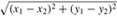
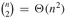
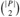
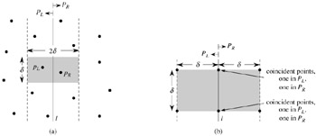
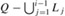
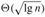

|
|
< Day Day Up > |
|
We now consider the problem of finding the closest pair of points in a set Q of n ≥ 2 points. "Closest" refers to the usual euclidean distance: the distance between points p1 = (x1, y1) and p2 = (x2, y2) is . Two points in set Q may be coincident, in which case the distance between them is zero. This problem has applications in, for example, traffic-control systems. A system for controlling air or sea traffic might need to know which are the two closest vehicles in order to detect potential collisions.
A brute-force closest-pair algorithm simply looks at all the  pairs of points. In this section, we shall describe a divide-and-conquer algorithm for this problem whose running time is described by the familiar recurrence T (n) = 2T(n/2) + O(n). Thus, this algorithm uses only O(n lg n) time.
Each recursive invocation of the algorithm takes as input a subset P ⊆ Q and arrays X and Y, each of which contains all the points of the input subset P. The points in array X are sorted so that their x-coordinates are monotonically increasing. Similarly, array Y is sorted by monotonically increasing y-coordinate. Note that in order to attain the O(n lg n) time bound, we cannot afford to sort in each recursive call; if we did, the recurrence for the running time would be T(n) = 2T(n/2) + O(n lg n), whose solution is T(n) = O(n lg2 n). (Use the version of the master method given in Exercise 4.4-2.) We shall see a little later how to use "presorting" to maintain this sorted property without actually sorting in each recursive call.
A given recursive invocation with inputs P, X, and Y first checks whether |P| ≤ 3. If so, the invocation simply performs the brute-force method described above: try all  pairs of points and return the closest pair. If |P| > 3, the recursive invocation carries out the divide-and-conquer paradigm as follows.
Divide: It finds a vertical line l that bisects the point set P into two sets PL and PR such that |PL| = ⌈|P|/2⌉, |PR| = ⌊|P|/2⌋, all points in PL are on or to the left of line l, and all points in PR are on or to the right of l. The array X is divided into arrays XL and XR, which contain the points of PL and PR respectively, sorted by monotonically increasing x-coordinate. Similarly, the array Y is divided into arrays YL and YR, which contain the points of PL and PR respectively, sorted by monotonically increasing y-coordinate.
Conquer: Having divided P into PL and PR, it makes two recursive calls, one to find the closest pair of points in PL and the other to find the closest pair of points in PR. The inputs to the first call are the subset PL and arrays XL and YL; the second call receives the inputs PR, XR, and YR. Let the closest-pair distances returned for PL and PR be δL and δR, respectively, and let δ = min(δL, δR).
Combine: The closest pair is either the pair with distance δ found by one of the recursive calls, or it is a pair of points with one point in PL and the other in PR. The algorithm determines if there is such a pair whose distance is less than δ. Observe that if there is a pair of points with distance less than δ, both points of the pair must be within δ units of line l. Thus, as Figure 33.11(a) shows, they both must reside in the 2δ-wide vertical strip centered at line l. To find such a pair, if one exists, the algorithm does the following.

Figure 33.11: Key concepts in the proof that the closest-pair algorithm needs to check only 7 points following each point in the array Y′. (a) If pL ∈ PL and pR ∈ PR are less than δ units apart, they must reside within a δ × 2δ rectangle centered at line l. (b) How 4 points that are pairwise at least δ units apart can all reside within a δ × δ square. On the left are 4 points in PL, and on the right are 4 points in PR. There can be 8 points in the δ × 2δ rectangle if the points shown on line l are actually pairs of coincident points with one point in PL and one in PR.
It creates an array Y′, which is the array Y with all points not in the 2δ-wide vertical strip removed. The array Y′ is sorted by y-coordinate, just as Y is.
For each point p in the array Y′, the algorithm tries to find points in Y′ that are within δ units of p. As we shall see shortly, only the 7 points in Y′ that follow p need be considered. The algorithm computes the distance from p to each of these 7 points and keeps track of the closest-pair distance δ′ found over all pairs of points in Y′.
If δ′ < δ, then the vertical strip does indeed contain a closer pair than was found by the recursive calls. This pair and its distance δ′ are returned. Otherwise, the closest pair and its distance δ found by the recursive calls are returned.
The above description omits some implementation details that are necessary to achieve the O(n lg n) running time. After proving the correctness of the algorithm, we shall show how to implement the algorithm to achieve the desired time bound.
The correctness of this closest-pair algorithm is obvious, except for two aspects. First, by bottoming out the recursion when |P| ≤ 3, we ensure that we never try to solve a subproblem consisting of only one point. The second aspect is that we need only check the 7 points following each point p in array Y′; we shall now prove this property.
Suppose that at some level of the recursion, the closest pair of points is pL ∈ PL and pR ∈ PR. Thus, the distance δ′ between pL and pR is strictly less than δ. Point pL must be on or to the left of line l and less than δ units away. Similarly, pR is on or to the right of l and less than δ units away. Moreover, pL and pR are within δ units of each other vertically. Thus, as Figure 33.11(a) shows, pL and pR are within a δ × 2δ rectangle centered at line l. (There may be other points within this rectangle as well.)
We next show that at most 8 points of P can reside within this δ × 2δ rectangle. Consider the δ × δ square forming the left half of this rectangle. Since all points within PL are at least δ units apart, at most 4 points can reside within this square; Figure 33.11(b) shows how. Similarly, at most 4 points in PR can reside within the δ × δ square forming the right half of the rectangle. Thus, at most 8 points of P can reside within the δ × 2δ rectangle. (Note that since points on line l may be in either PL or PR, there may be up to 4 points on l. This limit is achieved if there are two pairs of coincident points such that each pair consists of one point from PL and one point from PR, one pair is at the intersection of l and the top of the rectangle, and the other pair is where l intersects the bottom of the rectangle.)
Having shown that at most 8 points of P can reside within the rectangle, it is easy to see that we need only check the 7 points following each point in the array Y′.Still assuming that the closest pair is pL and pR, let us assume without loss of generality that pL precedes pR in array Y′. Then, even if pL occurs as early as possible in Y′ and pR occurs as late as possible, pR is in one of the 7 positions following pL . Thus, we have shown the correctness of the closest-pair algorithm.
As we have noted, our goal is to have the recurrence for the running time be T(n) = 2T(n/2) + O(n), where T(n) is the running time for a set of n points. The main difficulty is in ensuring that the arrays XL, XR, YL, and YR, which are passed to recursive calls, are sorted by the proper coordinate and also that the array Y′ is sorted by y-coordinate. (Note that if the array X that is received by a recursive call is already sorted, then the division of set P into PL and PR is easily accomplished in linear time.)
The key observation is that in each call, we wish to form a sorted subset of a sorted array. For example, a particular invocation is given the subset P and the array Y , sorted by y-coordinate. Having partitioned P into PL and PR, it needs to form the arrays YL and YR, which are sorted by y-coordinate. Moreover, these arrays must be formed in linear time. The method can be viewed as the opposite of the MERGE procedure from merge sort in Section 2.3.1: we are splitting a sorted array into two sorted arrays. The following pseudocode gives the idea.
1 length[YL] ← length[YR] ← 0 2 for i ← 1 to length[Y] 3 do if Y[i] ∈ PL 4 then length[YL] ← length[YL] + 1 5 YL[length[YL]] ← Y[i] 6 else length[YR] ← length[YR] + 1 7 YR[length[YR]] ← Y[i]
We simply examine the points in array Y in order. If a point Y[i] is in PL, we append it to the end of array YL; otherwise, we append it to the end of array YR. Similar pseudocode works for forming arrays XL, XR, and Y′.
The only remaining question is how to get the points sorted in the first place. We do this by simply presorting them; that is, we sort them once and for all before the first recursive call. These sorted arrays are passed into the first recursive call, and from there they are whittled down through the recursive calls as necessary. The presorting adds an additional O(n lg n) to the running time, but now each step of the recursion takes linear time exclusive of the recursive calls. Thus, if we let T(n) be the running time of each recursive step and T′(n) be the running time of the entire algorithm, we get T′(n) = T (n) + O(n lg n) and
Thus, T(n) = O(n lg n) and T′(n) = O(n lg n).
Professor Smothers comes up with a scheme that allows the closest-pair algorithm to check only 5 points following each point in array Y′. The idea is always to place points on line l into set PL. Then, there cannot be pairs of coincident points on line l with one point in PL and one in PR. Thus, at most 6 points can reside in the δ × 2δ rectangle. What is the flaw in the professor's scheme?
Without increasing the asymptotic running time of the algorithm, show how to ensure that the set of points passed to the very first recursive call contains no coincident points. Prove that it then suffices to check the points in the 5 array positions following each point in the array Y′.
The distance between two points can be defined in ways other than euclidean. In the plane, the Lm-distance between points p1 and p2 is given by the expression (|x1 - x2|m + |y1 - y2|m)1/m. Euclidean distance, therefore, is L2-distance. Modify the closest-pair algorithm to use the L1-distance, which is also known as the Manhattan distance.
Given two points p1 and p2 in the plane, the LÝ-distance between them is given by max(|x1 - x2|,|y1 - y2|). Modify the closest-pair algorithm to use the L∞-distance.
Suggest a change to the closest-pair algorithm that avoids presorting the Y array but leaves the running time as O(n lg n). (Hint: Merge sorted arrays YL and YR to form the sorted array Y.)
Given a set Q of points in the plane, we define the convex layers of Q inductively. The first convex layer of Q consists of those points in Q that are vertices of CH(Q). For i > 1, define Qi to consist of the points of Q with all points in convex layers 1, 2, ..., i - 1 removed. Then, the ith convex layer of Q is CH(Qi) if Qi ≠ Ø and is undefined otherwise.
Give an O(n2)-time algorithm to find the convex layers of a set of n points.
Prove that Ω(n lg n) time is required to compute the convex layers of a set of n points with any model of computation that requires Ω(n lg n) time to sort n real numbers.
Let Q be a set of n points in the plane. We say that point (x, y) dominates point (x′, y′) if x = x′ and y = y′. A point in Q that is dominated by no other points in Q is said to be maximal. Note that Q may contain many maximal points, which can be organized into maximal layers as follows. The first maximal layer L1 is the set of maximal points of Q. For i > 1, the ith maximal layer Li is the set of maximal points in .
Suppose that Q has k nonempty maximal layers, and let yi be the y-coordinate of the leftmost point in Li for i = 1, 2, ..., k. For now, assume that no two points in Q have the same x- or y-coordinate.
Show that y1 > y2 > ···> yk.
Consider a point (x, y) that is to the left of any point in Q and for which y is distinct from the y-coordinate of any point in Q. Let Q′ = Q ∪ {(x, y)}.
Let j be the minimum index such that yj < y, unless y < yk, in which case we let j = k + 1. Show that the maximal layers of Q′ are as follows.
If j ≤ k, then the maximal layers of Q′ are the same as the maximal layers of Q, except that Lj also includes (x, y) as its new leftmost point.
If j = k + 1, then the first k maximal layers of Q′ are the same as for Q, but in addition, Q′ has a nonempty (k + 1)st maximal layer: Lk+1 = {(x, y)}.
Describe an O(n lg n)-time algorithm to compute the maximal layers of a set Q of n points. (Hint: Move a sweep line from right to left.)
Do any difficulties arise if we now allow input points to have the same x- or y-coordinate? Suggest a way to resolve such problems.
A group of n Ghostbusters is battling n ghosts. Each Ghostbuster is armed with a proton pack, which shoots a stream at a ghost, eradicating it. A stream goes in a straight line and terminates when it hits the ghost. The Ghostbusters decide upon the following strategy. They will pair off with the ghosts, forming n Ghostbuster-ghost pairs, and then simultaneously each Ghostbuster will shoot a stream at his chosen ghost. As we all know, it is very dangerous to let streams cross, and so the Ghostbusters must choose pairings for which no streams will cross.
Assume that the position of each Ghostbuster and each ghost is a fixed point in the plane and that no three positions are collinear.
Argue that there exists a line passing through one Ghostbuster and one ghost such the number of Ghostbusters on one side of the line equals the number of ghosts on the same side. Describe how to find such a line in O(n lg n) time.
Give an O(n2 lg n)-time algorithm to pair Ghostbusters with ghosts in such a way that no streams cross.
Professor Charon has a set of n sticks, which are lying on top of each other in some configuration. Each stick is specified by its endpoints, and each endpoint is an ordered triple giving its (x, y, z) coordinates. No stick is vertical. He wishes to pick up all the sticks, one at a time, subject to the condition that he may pick up a stick only if there is no other stick on top of it.
Give a procedure that takes two sticks a and b and reports whether a is above, below, or unrelated to b.
Describe an efficient algorithm that determines whether it is possible to pick up all the sticks, and if so, provides a legal sequence of stick pickups to do so.
Consider the problem of computing the convex hull of a set of points in the plane that have been drawn according to some known random distribution. Sometimes, the number of points, or size, of the convex hull of n points drawn from such a distribution has expectation O(n1-∈) for some constant ∈ > 0. We call such a distribution sparse-hulled. Sparse-hulled distributions include the following:
Points drawn uniformly from a unit-radius disk. The convex hull has Θ(n1/3) expected size.
Points drawn uniformly from the interior of a convex polygon with k sides, for any constant k. The convex hull has Θ(lg n) expected size.
Points drawn according to a two-dimensional normal distribution. The convex hull has  expected size.
Given two convex polygons with n1 and n2 vertices respectively, show how to compute the convex hull of all n1 + n2 points in O(n1 + n2) time. (The polygons may overlap.)
Show that the convex hull of a set of n points drawn independently according to a sparse-hulled distribution can be computed in O(n) expected time. (Hint: Recursively find the convex hulls of the first n/2 points and the second n/2 points, and then combine the results.)
|
|
< Day Day Up > |
|